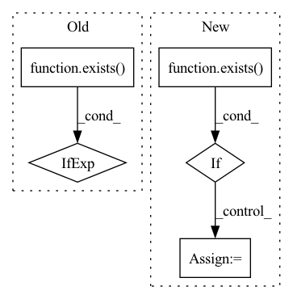

Pattern ID :919

Before Change
ConvOut1d(
channels=out_channels,
kernel_sizes=kernel_sizes_out,
)
if exists(kernel_sizes_out)
else nn.Identity(),
)
def get_channels(
After Change
self.use_context_time = use_context_time
self.use_context_features = use_context_features
self.use_context_channels = use_context_channels
self.use_post_out_block = exists(kernel_sizes_out)
context_channels_pad_length = num_layers + 1 - len(context_channels)
context_channels = context_channels + [0] * context_channels_pad_length
self.context_channels = context_channels
if use_context_channels:
has_context = [c > 0 for c in context_channels]
self.has_context = has_context
self.channels_ids = [sum(has_context[:i]) for i in range(len(has_context))]
assert (
len(factors) == num_layers
and len(attentions) == num_layers
and len(num_blocks) == num_layers
)
self.to_in = nn.Sequential(
Rearrange("b c (l p) -> b (c p) l", p=patch_size),
CrossEmbed1d(
in_channels=(in_channels + context_channels[0]) * patch_size,
out_channels=channels,
kernel_sizes=kernel_sizes_init,
stride=1,
),
)
if use_context_time or use_context_features:
context_mapping_features = channels * 4
self.to_mapping = nn.Sequential(
nn.Linear(context_mapping_features, context_mapping_features),
nn.GELU(),
nn.Linear(context_mapping_features, context_mapping_features),
nn.GELU(),
)
if use_context_time:
assert exists(context_mapping_features)
self.to_time = nn.Sequential(
TimePositionalEmbedding(
dim=channels, out_features=context_mapping_features
),
nn.GELU(),
)
if use_context_features:
assert exists(context_features) and exists(context_mapping_features)
self.to_features = nn.Sequential(
nn.Linear(
in_features=context_features, out_features=context_mapping_features
),
nn.GELU(),
)
self.downsamples = nn.ModuleList(
[
DownsampleBlock1d(
in_channels=channels * multipliers[i],
out_channels=channels * multipliers[i + 1],
context_mapping_features=context_mapping_features,
context_channels=context_channels[i + 1],
context_embedding_features=context_embedding_features,
num_layers=num_blocks[i],
factor=factors[i],
kernel_multiplier=kernel_multiplier_downsample,
num_groups=resnet_groups,
use_pre_downsample=True,
use_skip=True,
use_attention=attentions[i],
attention_heads=attention_heads,
attention_features=attention_features,
attention_multiplier=attention_multiplier,
)
for i in range(num_layers)
]
)
self.bottleneck = BottleneckBlock1d(
channels=channels * multipliers[-1],
context_mapping_features=context_mapping_features,
context_embedding_features=context_embedding_features,
num_groups=resnet_groups,
use_attention=use_attention_bottleneck,
attention_heads=attention_heads,
attention_features=attention_features,
)
self.upsamples = nn.ModuleList(
[
UpsampleBlock1d(
in_channels=channels * multipliers[i + 1],
out_channels=channels * multipliers[i],
context_mapping_features=context_mapping_features,
context_embedding_features=context_embedding_features,
num_layers=num_blocks[i] + (1 if attentions[i] else 0),
factor=factors[i],
use_nearest=use_nearest_upsample,
num_groups=resnet_groups,
use_skip_scale=use_skip_scale,
use_pre_upsample=False,
use_skip=True,
skip_channels=channels * multipliers[i + 1],
use_attention=attentions[i],
attention_heads=attention_heads,
attention_features=attention_features,
attention_multiplier=attention_multiplier,
)
for i in reversed(range(num_layers))
]
)
self.to_pre_out = ResnetBlock1d(
in_channels=channels,
out_channels=channels,
num_groups=resnet_groups,
context_mapping_features=context_mapping_features,
)
self.to_out = nn.Sequential(
Conv1d(
in_channels=channels,
out_channels=out_channels * patch_size,
kernel_size=1,
),
Rearrange("b (c p) l -> b c (l p)", p=patch_size),
)
if self.use_post_out_block:
assert exists(kernel_sizes_out)
self.to_post_out = ConvOut1d(
channels=out_channels,
kernel_sizes=kernel_sizes_out,
)
In pattern: SUPERPATTERN
Frequency: 3
Non-data size: 5
Instances
Fragment ID: 1972463
Project Name: archinetai/audio-diffusion-pytorch
Commit Name: 3c710edf168da06dcc89c23ef12023d0f8b63043
Time: 2022-09-21
Author: flavio.schneider.97@gmail.com
File Name: audio_diffusion_pytorch/modules.py
Class Name: UNet1d
Method Name: __init__
Parent Class: nn.Module
Fragment ID: 1972460
Project Name: archinetai/audio-diffusion-pytorch
Commit Name: 3c710edf168da06dcc89c23ef12023d0f8b63043
Time: 2022-09-21
Author: flavio.schneider.97@gmail.com
File Name: audio_diffusion_pytorch/modules.py
Class Name: ResnetBlock1d
Method Name: __init__
Parent Class: nn.Module
Fragment ID: 1972461
Project Name: lucidrains/dalle2-pytorch
Commit Name: f9423d308b6f36e51152c2c45045ff4ebb308287
Time: 2022-07-20
Author: 51308183+nousr@users.noreply.github.com
File Name: dalle2_pytorch/trainer.py
Class Name: DiffusionPriorTrainer
Method Name: __init__
Parent Class: nn.Module